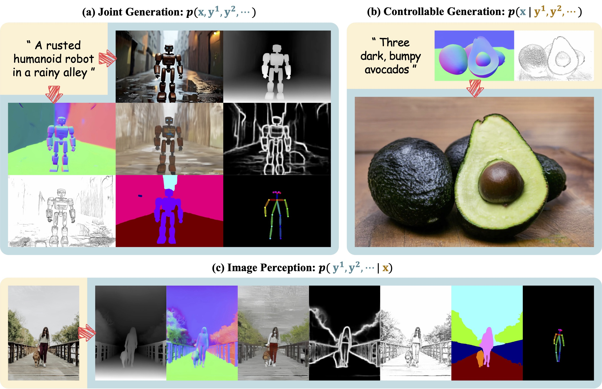
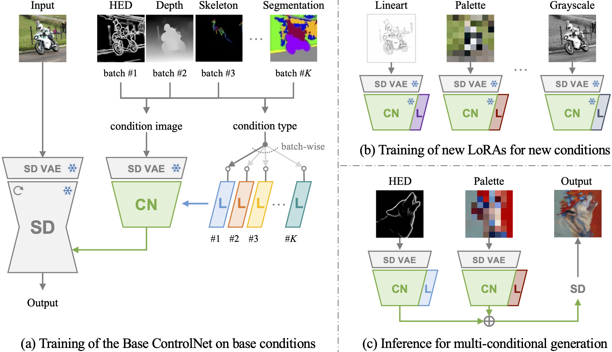
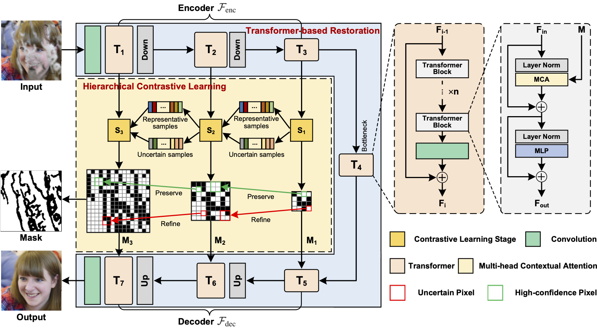

Jodi: Unification of Visual Generation and Understanding via Joint Modeling
arXiv 2025
I am an incoming PhD student in the MMLab@HKU, supervised by Prof. Xihui Liu. Previously, I earned my MSc from the VIPL group at ICT in 2026 under the supervision of Prof. Shiguang Shan, and worked closely with Prof. Zhenliang He. Before that, I received my BEng from HITsz in 2023 under the supervision of Prof. Wenjie Pei.
My current research interests lie in generative models and their applications to computer vision and multimodal learning.
* Equal contribution, † Corresponding author

arXiv 2025

